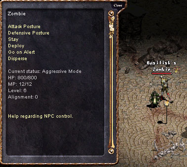

2003年1月21日 迷魅法師任務的超級僵屍來源：Lineage Compendium  美國Ken伺服器的玩家Basilisk登現了一個有趣的事，他迷魅了法師任務中的人型僵屍後，發現了它竟然是6級但有800HP！由此在此任務中使用起死回生術是較有效的做法。 而更有趣的是，超級人型僵屍有極速的回血量及極強的攻擊，它在攻擊-4x防玩家時可以扣30HP呢！ 另外Basilisk亦找來侏儒戰士、雪怪、高侖熔岩怪來做測試，但它們通通不是超級人型僵屍的對手，另外超級人型僵屍還擊倒了加速了的肥王（餘下134HP）及妖森的守護神芮克妮呢！ PS: 普通怪物是根據其最大HP來決定其回血量，每次回血時間為固定5秒，1-79HP每次回1血，其後每40HP多1，即是80-119HP回2血，120-159HP回3血，160-199HP回4血，如此類推．．．因此800HP的超級人型僵屍大約每5秒回20血。另外召喚的怪物是根據野生的最大HP來決定其回血量。 |